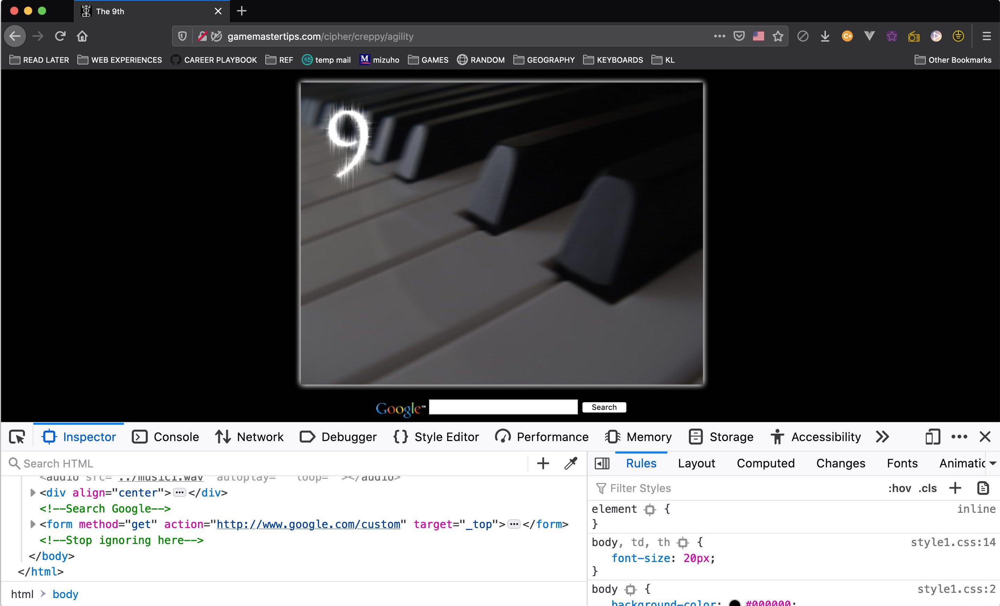
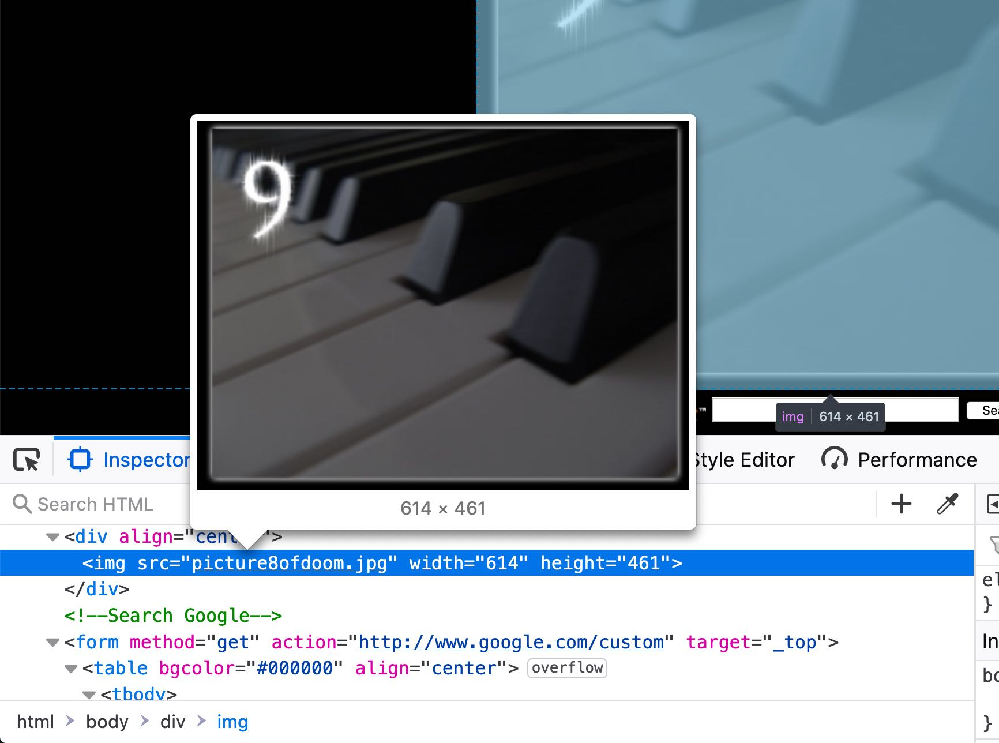
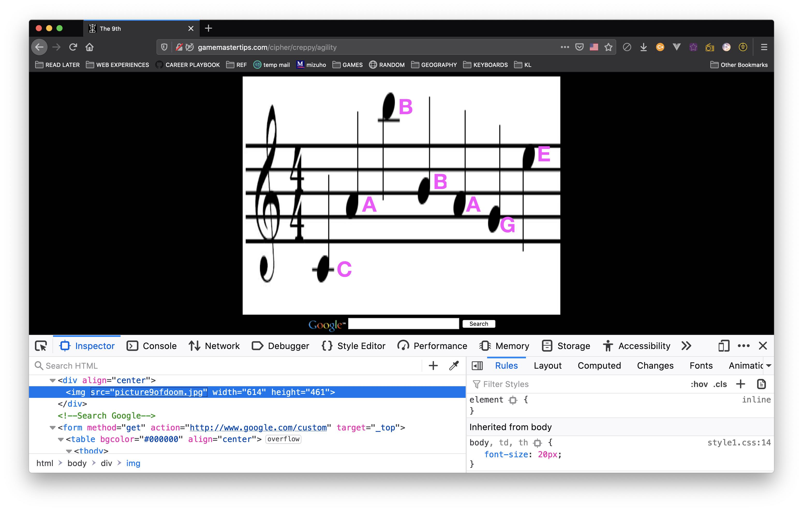
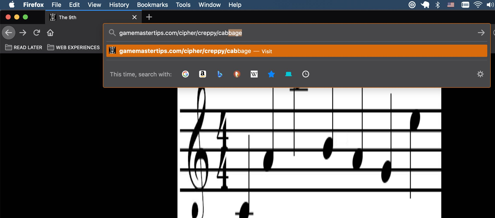

This week, we played a challenging, browser-based game that requires web, HTML, and CSS skills to beat each level. The game is called Cipher.
It was fun trying to find the keyword that would unlock each new challenge. Doing so requires opening the browser inspector, reading the source code, and then manipulating the page in some way to reveal an answer.
For instance, on level 9, we see a picture of piano keys.
In the inspector, there is an image titled "picture8ofdoom." 🤔
That's strange... because we're on level 9, not 8.
If we change the picture's name to "picture9ofdoom," the image swaps to a string of musical notes.

And then, knowing that each note corresponds to an alphabetical letter, we can decipher the message, which ends up being "CABBAGE."
Typing "cabbage" in the url will take us to the next challenge.
We probably won't spend much time on this in the future, but it was a fun diversion that flexed our critical thinking muscles.
Making puzzles like this isn't too difficult and could be an interesting future project for us to work on.